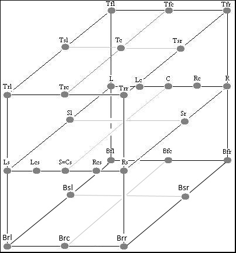

/ VST Home / Technical Documentation
[3.0.0] Multiple Dynamic I/O Support
On this page:
- Introduction
- Multiple Input or Output busses
- Information about busses
- Activation of busses
- What is a Side-Chain?
- How can I implement a Side-chain path into my plug-in?
- Audio bus Channel Configuration
- How are the different Speakers located?
- My plug-in is capable of processing all possible channel configurations
- How are speaker arrangement settings handled for FX plug-ins?
- How report to the host that the plug-in Arrangement has changed?
- My plug-in has mono input and stereo output. How does VST 3 handle this?
Related pages
- Audio Processor Call Sequence
- Bus Arrangement Setting Sequence
- Complex Plug-in Structures / Multi-timbral Instruments
Introduction
VST 3 plug-ins are no longer limited to a fixed number of inputs and outputs, and their I/O configuration can dynamically adapt to the channel configuration. Side-chains are also very easily realizable. This includes the possibility to deactivate unused busses after loading and even reactivate those when needed. This cleans up the mixer and further helps to reduce CPU load.
A bus can be understood as a "collection of data channels" belonging together:
- it describes a data input (kInput) or a data output (kOutput) of the plug-in.
- 2 types of bus is supported: kAudio and kEvent
- a VST component can define any desired number of busses.
- a bus could be defined a main bus (kMain) or auxiliary bus (kAux) for sidechaining (The kMain busses have to place before any others kAux busses in the exported busses list)
- a host that can handle multiple busses, allows the user to activate busses which are initially all inactive.
Multiple Input or Output busses
A plug-in could have different reason to define multiple event input busses, for examples:
- in case of complex multitimbral instrument supporting more than 16 loaded sub-instruments at the same time by adding a kind of structure in its inputs from host perspective (simulating a kind of number of "MIDI Port" having its sub-MIDI channels)
- in case to different inputs meaning, which are distinctly visible and selectable in the host:
- one input for playing event
- one input for modulation event
A plug-in could have different reason to define multiple event output busses, for example:
- in case of a main event output for played event from the UI and one event output for internally generated events from an arpeggiator.
A plug-in could decide to export more than one audio input by adding a second audio input (Side-chains, see below) or more.
A typical use case for multiple audio outputs is instrument plug-ins, for examples:
- with one main audio output and some auxiliary audio outputs for FX Returns or FX Sends.
- with one main audio output for each internally loaded instrument.
Example
//------------------------------------------------------------------------
tresult PLUGIN_API MyPlugin::initialize (FUnknown* context)
{
//---always initialize the parent-------
tresult result = AudioEffect::initialize (context);
// if everything Ok, continue
if (result != kResultOk)
{
return result;
}
//---create Audio In/Out busses------
// we want a stereo Input and a Stereo Output
addAudioInput (STR16 ("Stereo In"), SpeakerArr::kStereo, kMain, BusInfo::kDefaultActive);
addAudioOutput (STR16 ("Stereo Out"), SpeakerArr::kStereo, kMain, BusInfo::kDefaultActive);
//---create Main Event In bus (1 bus with only 16 channel)------
addEventInput (STR16 ("Event In"), 16, kMain, BusInfo::kDefaultActive);
//---create Aux Event In bus (1 bus with only 1 channel)------
addEventInput (STR16 ("Mod In"), 1, kAux, 0); // not default activated wanted
//---create Event out bus (1 bus with only 1 channel)------
addEventOutput (STR16 ("Arpeggiator"), 1, kAux, 0); // not default activated wanted
return kResultOk;
}
Information about busses
In order to get the number and information about busses exported by the plug-in, the host uses this interface Vst:: IComponent with these functions:
/** Called after the plug-in is initialized. */
virtual int32 PLUGIN_API getBusCount (MediaType type, BusDirection dir) = 0;
/** Called after the plug-in is initialized. */
virtual tresult PLUGIN_API getBusInfo (MediaType type, BusDirection dir, int32 index, BusInfo& bus /*out*/) = 0;
BusInfo contains information like:
- name,
- number of channel,
- ...
- and the some flags indicating:
- kDefaultActive: The bus should be activated by the host per default on instantiation (activateBus call is requested). By default a bus is inactive. Note that if a host offers the possibility to activate/deactivate busses to the user later on, it may not follow this flag kDefaultActive and let some busses deactivated on instantiation.
- kIsControlVoltage: The bus does not contain ordinary audio data, but data used for control changes at sample rate.
- The data is in the same format as the audio data [-1.0, 1.0].
- A host has to prevent unintended routing to speakers to prevent damage.
- Only valid for audio media type busses.
Activation of busses
Dynamic usage of busses is handled in the host by activating and deactivating busses. All busses are initially inactive.
The plug-in has to define which of them have to be activated by default after instantiation of the plug-in, this is only a wish, the host is allowed to not follow it, and only activate the first bus for example.
// here default activation is wanted (but not guaranteed)
addAudioInput (STR16 ("SideChain"), SpeakerArr::kStereo, kAux, BusInfo::kDefaultActive);
In order to be use each Input bus and Output bus have to be activated, this is done by the host by using this interface implemented by the plug-in (Vst:: IComponent):
//------------------------------------------------------------------------
tresult PLUGIN_API Component::activateBus (MediaType type, BusDirection dir, int32 index, TBool state)
{
// ...
Deactivated busses do not need to be processed by the plug-in, which allows to reduce the CPU load.
Check the workflow diagrams in order to understand when this is called:
What is a Side-Chain?
In audio applications, some plug-ins allow for a secondary signal to be made available to the plug-in and act as a controller of one or more parameters in the processing. Such a signal is commonly called a Side-chain Signal or Side-chain Input.
Examples:
If a recorded kick drum is considered well played, but the recording of the bass player's part shows that he regularly plays slightly ahead of the kick drum, a plug-in with a 'Gating' function on the bass part can use the kick drum signal as a side-chain to 'trim' the bass part precisely to that of the kick.
Another application is to automatically lower the level of a musical background when another signal, such as a voice, reaches a certain level. In this case a plug-in with a 'Ducking' function would be used - where the main musical signal is reduced while the voice signal is applied to the side-chain input.
A delay's mix parameter can be controlled by a side-chain input signal - to make the amount of delay signal proportional to the level of another.
The side-chain can be used as an additional modulation source instead of cyclic forms of modulation. From the plug-in's perspective, side-chain inputs and/or outputs are additional inputs and outputs which can be enabled or disabled by the host.
The host (if supported) will provide to the user a way to route some signal paths to these side-chain inputs or from side-chain outputs to others signal inputs.

What is Side-Chaining and How to Use It | Music Production For Beginners

Here an example of Side-Chaining for a Instrument in Cubase
How can I implement a Side-chain path into my plug-in?
In AudioEffect::initialize (FUnknown* context) you must add the required bus- and speaker configuration of your plug-in. For example, if your plug-in works on one input and one output bus, both stereo, the appropriate code snippet would look in the following way:
addAudioInput (USTRING ("Stereo In"), SpeakerArr::kStereo);
addAudioOutput (USTRING ("Stereo Out"), SpeakerArr::kStereo);
// In addition, adding a stereo side-chain bus would look in the following way:
addAudioInput (USTRING ("Aux In"), SpeakerArr::kStereo, kAux, 0); // 0 here means not activated by default wanted
Audio bus Channel Configuration
Each audio bus has its channel configuration which is a Speaker Arrangement:
Stereo (L+R)
const SpeakerArrangement kStereo = kSpeakerL | kSpeakerR;
How are the different Speakers located?
Here's an overview of the main defined speaker locations (Check enum Speakers and namespace SpeakerArr). A SpeakerArrangement is a bitset combination of speakers.
For example:
const SpeakerArrangement kStereo = kSpeakerL | kSpeakerR; // => representing in hexadecimal 0x03 and in binary 0011.

My plug-in is capable of processing all possible channel configurations
What type of speaker arrangement should I select when adding busses?
Take the configuration your plug-in is most likely to be used with. For a 5.1-surround setup that would be the following:
addAudioInput (USTRING ("Surround In"), SpeakerArr::k51);
addAudioOutput (USTRING ("Surround Out"), SpeakerArr::k51);
But when the host calls Vst:: IAudioProcessor::setBusArrangements the host is informing your plug-in of the current speaker arrangement of the track it was selected in. You should return kResultOk, in the case you accept this arrangement, or kResultFalse, in case you do not.
ⓘ Note
If you reject a Vst:: IAudioProcessor::setBusArrangements by returning kResultFalse, the host calls Vst:: IAudioProcessor::getBusArrangement where you have the chance to give the parameter 'arrangement' the value of the speaker arrangement your plug-in does accept for this given bus.Afterward the host can recall Vst:: IAudioProcessor::setBusArrangements with the plug-in wanted Arrangements then the plug-in should return kResultOk.
How are speaker arrangement settings handled for FX plug-ins?
After instantiation of the plug-in, the host calls Vst:: IAudioProcessor::setBusArrangements with a default configuration (depending on the current channel configuration), if the plug-in accepts it (by returning kResultOK), it will continue with this configuration. If not (by returning kResultFalse), the host asks the plug-in for its wanted configuration by calling Vst:: IAudioProcessor::getBusArrangement (for Input and Output) and then recall Vst:: IAudioProcessor::setBusArrangements with the final wanted configuration. Check Bus Arrangement Setting Sequences workflow.
// Example of a Plug-in supporting only symmetric Input-Output Arrangements:
host -> plug-in: setBusArrangements (monoIN, stereoOUT)
plug-in return: kResultFalse
host -> plug-in: getBusArrangement (IN) => return Stereo;
host -> plug-in: getBusArrangement (OUT) => return Stereo;
host -> plug-in: setBusArrangements (stereoIN, stereoOUT)
plug-in return: kResultOk
// Example of a Plug-in supporting only asymmetric Input-Output Arrangements (mono->stereo):
host -> plug-in: setBusArrangements (stereoIN, stereoOUT)
plug-in return: kResultFalse
host -> plug-in: getBusArrangement (IN) => return Mono;
host -> plug-in: getBusArrangement (OUT) => return Stereo;
host -> plug-in: setBusArrangements (MonoIN, stereoOUT)
plug-in return: kResultOk
// Example of a Plug-in supporting only asymmetric Input-Output Arrangements (mono-> stereo to up 5.1):
host -> plug-in: setBusArrangements (5.1IN, 5.1OUT)
plug-in return: kResultFalse
host -> plug-in: getBusArrangement (IN) => return Mono;
host -> plug-in: getBusArrangement (OUT) => return 5.1;
host -> plug-in: setBusArrangements (MonoIN, 5.1OUT)
plug-in return: kResultOk
// Host -> Plug-in: setBusArrangements (QuadroIN, QuadroOUT)
plug-in return: kResultFalse
host -> plug-in: getBusArrangement (IN) => return Mono;
host -> plug-in: getBusArrangement (OUT) => return Quadro;
host -> plug-in: setBusArrangements (MonoIN, QuadroOUT)
plug-in return: kResultOk
// Example of a Plug-in supporting only symmetric Input-Output Arrangements and Side-chain Input always mono:
host -> plug-in: getBusArrangements (IN) => Input Main:Mono / Input Side-chain:Mono
host -> plug-in: getBusArrangements (OUT) => Output: mono
host -> plug-in: setBusArrangements (Input Main:stereo / Input Side-chain:Mono, Output: stereo)
plug-in return: kResultTrue
or
host -> plug-in: getBusArrangements (IN) => Input Main:Mono / Input Side-chain:Mono
host -> plug-in: getBusArrangements (OUT) => Output: mono
host -> plug-in: setBusArrangements (Input Main:stereo / Input Side-chain:stereo, Output: stereo)
plug-in return: kResultFalse // because we want mono for Side-chain
host -> plug-in: getBusArrangement (IN) => return Input Main:stereo / Input Side-chain:mono;
host -> plug-in: getBusArrangement (OUT) => return Stereo;
host -> plug-in: setBusArrangements (Input Main:stereo / Input Side-chain:mono, Output: stereo)
plug-in return: kResultOk
// Example of a Plug-in supporting only symmetric Input-Output Arrangements and Side-chain Input following the Main Input Arrangement:
host -> plug-in: getBusArrangements (IN) => Input Main:Mono / Input Side-chain:Mono
host -> plug-in: getBusArrangements (OUT) => Output: mono
host -> plug-in: setBusArrangements (Input Main:stereo / Input Side-chain:Mono, Output: stereo)
plug-in return: kResultFalse // because we want the same arrangement for Input Main and Side-chain
host -> plug-in: getBusArrangement (IN) => return Input Main:stereo / Input Side-chain:stereo;
host -> plug-in: getBusArrangement (OUT) => return Stereo;
host -> plug-in: setBusArrangements (Input Main:stereo / Input Side-chain:stereo, Output: stereo)
plug-in return: kResultOk
How report to the host that the plug-in Arrangement has changed?
When loading a preset or with an user interaction, the plug-in wants to change its IO configuration. In this case the plug-in should call from the editController its component handler with flag kIoChanged:
componentHandler->restartComponent (kIoChanged);
The host will call Vst:: IAudioProcessor::getBusArrangement (for Input and Output) in order to check the new requested arrangement and then the host will call Vst:: IAudioProcessor::setBusArrangements (called in suspend state: setActive (false)) to confirm the requested arrangement.
My plug-in has mono input and stereo output. How does VST 3 handle this?
There are two ways to instantiate a plug-in in the following way:
- Way 1
In AudioEffect::initialize (FUnknown* context) you add one mono and one stereo bus.
//---------------------------------------------------------------
tresult PLUGIN_API AGain::initialize (FUnknown* context)
{
//---always initialize the parent-------
tresult result = AudioEffect::initialize (context);
// if everything Ok, continue
if (result != kResultOk)
{
return result;
}
addAudioInput (USTRING ("Mono In"), SpeakerArr::kMono);
addAudioOutput (USTRING ("Stereo Out"), SpeakerArr::kStereo);
//...
In case of Cubase/Nuendo being the host, the plug-in, afterbeing inserted into a stereo track, gets the left channel ofthe stereo input signal as its mono input. From this signalyou can create a stereo output signal.
- Way 2
In AudioEffect::initialize (FUnknown* context) you add one stereo input and one stereo output bus.
//---------------------------------------------------------------
tresult PLUGIN_API AGain::initialize (FUnknown* context)
{
//---always initialize the parent-------
tresult result = AudioEffect::initialize (context);
// if everything Ok, continue
if (result != kResultOk)
{
return result;
}
addAudioInput (USTRING ("Stereo In"), SpeakerArr::kStereo);
addAudioOutput (USTRING ("Stereo Out"), SpeakerArr::kStereo);
//...
For processing, the algorithm of your plug-in takes the left channel only, or creates a new mono input signal, by adding the samples of the left and right channels.